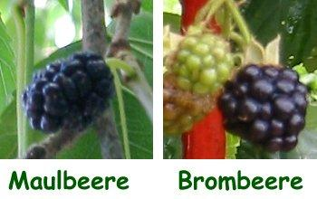

|
| Woher kommt der Name Maulbeere?
 | Der Name ist mit der Zeit aus dem alten lateinischen Wort morum entstanden:
morum, morberi, murber, mulber.
Es bedeutete Maulbeere oder Brombeere.
Die reifen Fruchtstände der Schwarzen Maulbeere sehen Brombeeren sehr ähnlich.
|